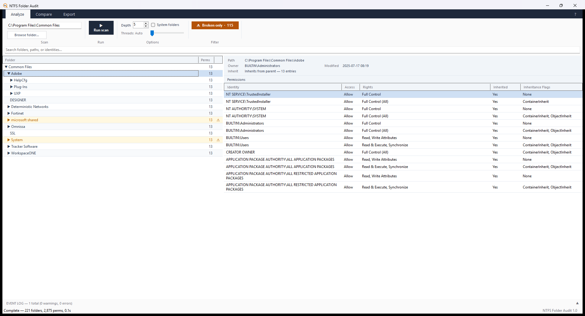

🖥️ Windows
Single EXE
Free & Open Source
NTFS Folder Audit
Audit NTFS folder permissions across any local path or UNC share
Built by a working MSP engineer — the tool I wished existed. Free, forever.
Audit NTFS folder permissions across any local path or UNC share
Built by a working MSP engineer — the tool I wished existed. Free, forever.
NTFS Folder Audit gives you a fast, readable view of who has access to what across any Windows file share. Scan a local path or a UNC share, expand the folder tree, click any folder to see exactly who has access and where it came from, and hand your client a self-contained interactive HTML report — no PowerShell required.

The permissions grid — identity, access type, decoded rights, and inheritance state at a glance.
No telemetry. No analytics. No HTTP client anywhere in the source. It reads the filesystem and writes the report you asked for — that's all. Drop it on an isolated or air-gapped network and it behaves identically. The only URLs in the whole app are three links in the About dialog that open in your browser when you click them.
No network connections, no data leaves the machine, no account, no watermarks on reports. What you scan stays with you.
Scan any local path or UNC share to a depth you choose. Every folder shows identity, access type, decoded rights, inheritance state and flags.
Instantly flag folders whose ACLs are set explicitly instead of inherited — the first thing worth reviewing in any audit. One click filters the tree to only those folders.
See the owner account per folder — including unresolvable SIDs left behind by deleted accounts, so nothing hides.
Point it at a share and its backup, or two folders that should match, and it highlights every folder whose permissions differ — plus anything present on only one side.
A self-contained HTML report — searchable, expandable, no external dependencies — you can email to anyone. Or a flat CSV for a spreadsheet or ticketing system.
Folders your account can't read are surfaced in an event log rather than silently reported as empty — so you always know what you missed.
The same engine runs from the CLI for scheduled audits: --path, --output, --csv, --depth, --exclude-system, --open.
A single self-contained EXE with the .NET runtime bundled in. Copy it to a tools folder, a server, or a USB stick and run — nothing touches Program Files.
Grab the latest NTFSFolderAudit.exe from GitHub Releases. There's no installer — copy it and run.
Run it as Administrator. It works without elevation, but any folder whose ACL your account can't read comes back as access-denied (surfaced in the event log, never silently skipped).
The download is ~155 MB because the .NET runtime is bundled inside — the trade for "copy it to any server and it just runs."
Audit a client file server fast — drop the EXE on the box, scan, export a report, done. Free to use in paid client work.
Document permissions before a migration and catch broken inheritance before it becomes a support ticket.
Compare permissions across a share and its backup to verify a migration landed correctly — instant diff.
Produce readable permission reports for reviews without writing a line of PowerShell.
PolyForm Shield 1.0.0 — free to use, not free to resell. In plain terms:
Free, single EXE, no install, no telemetry. Copy it to any server and run.
Download NTFS Folder Audit — Free →Saved you an afternoon? Buy me a coffee ☕